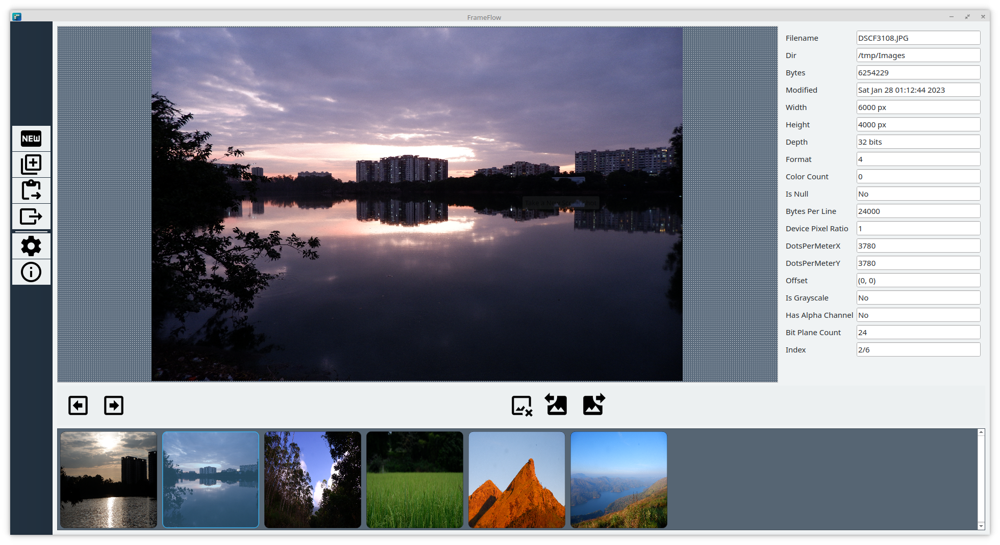
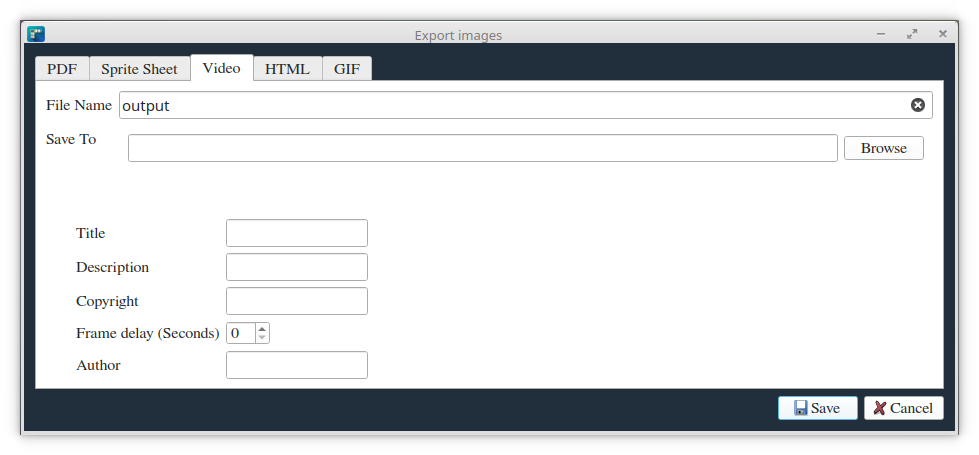
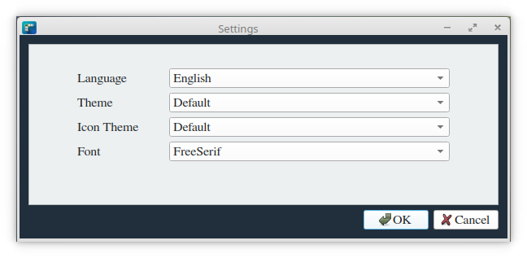

FrameFlow is a versatile Qt C++ application designed to transform series of images into various multimedia formats. With FrameFlow, you can easily create videos, PDFs, sprite images, GIFs, and HTML presentations from your image sequences. Whether you're a designer, animator, or content creator, FrameFlow streamlines your workflow for efficient and creative visual storytelling.



Image sequencing is the process of arranging multiple images in a specific order to create a narrative, show progression, or demonstrate a process. This technique is widely used in various fields.
FrameFlow simplifies the image sequencing process by providing user-friendly interfaces to import, arrange, and export image sequences. Convert image sequences to videos, PDFs, sprite images, GIFs, and HTML presentations.
(Please provide specific installation instructions for your Qt C++ application)
Follow these simple steps to create your project:
And there you have it! You've successfully used Frameflow to create your project. We hope you enjoy using your newly exported file!
Watch this video for a detailed walkthrough:
This project is licensed under the GNU General Public License (GPL). See the LICENSE file for details.
Copyright © 2024 vivx_developer (https://github.com/Vivx701/FrameFlow)
Developed with ❤️ by vivx_developer